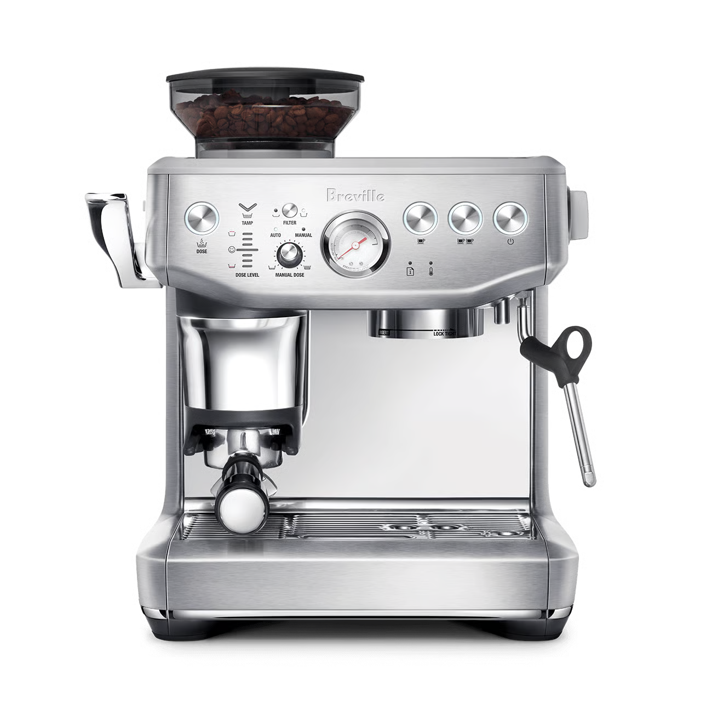
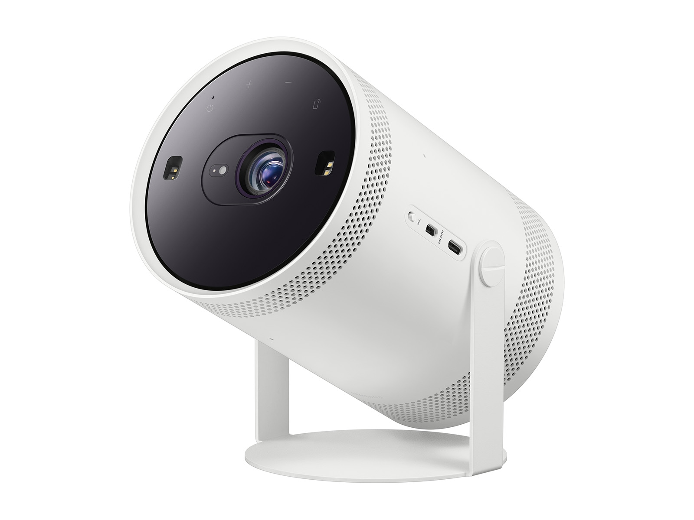

1 University of Science and Technology of China, Hefei, China2 National University of Singapore, Singapore
Creative Evolution Across Impressions
Progressive Storytelling
Morning ritual → hosting
Nora × Breville Barista Express Impress
A rushed weekday coffee problem evolves into a reclaimed home routine, then a weekend-hosting identity, before the final chapter recaps the trajectory and introduces verified product details.
Nora Alvarez · 32New York museum-program plannerMorning resetCozy homeBrunch & latte art

Daily routine
7:10 · Wake up→Rush out→Queue for coffee→Museum work→Cozy-home content→Weekend brunch
Monday · 7:35 · Morning-reset feedProblem / ForeshadowRushing out forces a choice between being on time and having coffee worth slowing down for; the product remains unseen.Tuesday night feed → Wednesday morningNew Routine / First PayoffThe same unresolved problem continues into a quiet at-home coffee ritual, with the official product introduced after the payoff.Saturday morning · Brunch feedLifestyle ExpansionThe private weekday ritual expands into a Saturday brunch shared with three friends.Re-engagement after prior interactionsRecap / ConversionThe queue, reclaimed morning, and four-person brunch are recovered before verified features, price, and CTA close the story.
Small screen → shared cinema
Andre × Samsung The Freestyle 2nd Gen
A film-focused motion designer moves from watching movies on his work laptop to a private wall-sized cinema and finally an outdoor movie night, making the purchase conclusion a continuation of the same story.
Andre Lewis · 35London motion designerFilm essaysSmall-space techRooftop cinema

Daily routine
9:30 · Edit at home / studio→18:45 · Close work laptop→Browse film content→Watch on a 13-inch laptop→Weekend rooftop gathering
Tuesday night · Film-essay feedProblem / ForeshadowA love of cinematic composition is constrained to the same 13-inch laptop used for work; no product or specifications appear.Weeknight · Small-space / projector feedNew Routine / First PayoffThe same empty wall becomes a private cinema as the official product first enters the established room.Saturday afternoon · Rooftop feedLifestyle ExpansionThe private viewing setup expands into a rooftop film night shared with three friends.Re-engagement · Projector-comparison feedRecap / ConversionSmall screen, wall-sized cinema, and rooftop screening lead into the official model, verified features, and CTA.
@article{xu2026nextads,
title={Envision Next-Generation Personalized Video Advertising},
author={Xu, Yiyan and Xia, Ruoxuan and Zheng, Wuqiang and Zhu, Fengbin and Wang, Wenjie and Feng, Fuli},
journal={arXiv preprint arXiv:2603.02137},
year={2026},
doi={10.48550/arXiv.2603.02137}
}